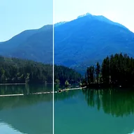

Luminosità e contrasto

Regola luminosità e contrasto dell’immagine.
Luminosità schiarisce o scurisce l'intera immagine. Contrasto allontana le aree chiare da quelle scure (o le avvicina con valori negativi). Inizia con piccole modifiche: entrambi vanno da -1 a 1. Per un controllo maggiore su ombre e luci, usa Livelli o Luci e ombre.
Impostazioni
| Impostazione | Tipo | Intervallo | Predefinito |
|---|---|---|---|
| Luminosità | Numero | Da -1 a 1 | 0.1 |
| Contrasto | Numero | Da -1 a 5 | 0.3 |
| Stile | Scelta | Per canale, Mantieni colore | Per canale |